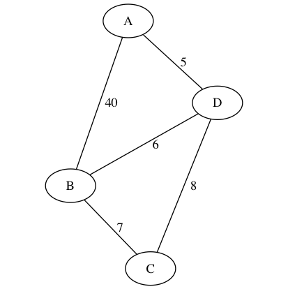

Consider a graph
Definition. A minimal spanning tree (MST) is subset of edges of a graph that form a tree and have minimal combined edge weight.
We can write TSP more relaxed as "find the MST of maximal outdegree 2".
Can get a good heuristic by just requiring "find the MST"..
Definition. The branching factor, \(b\), of a problem is
$$ \text{max}_q \left| \{ q^\prime \mid (q, \sigma, q^\prime) \in \Delta, \sigma \in \Sigma \} \right| $$
Definition The maximum depth, \(m\), of a problem is the length of the longest of the search paths from the initial state to any state.
Definition. The solution depth, \(d\), is the length of the shortest of the search paths from the initial state to a final state.
Say we have a tree. Let \(N_k\) be the number of nodes. Then we get
$$ \begin{array}{c|l} m & |N_0| = 1 = b^0 \\ \downarrow & |N_1| = b |N_0| \\ & |N_2| = b |N_1| \\ & |N_3| = b |N_2| = bb |N_1| = bbb |N_0| = b^3 \\ \end{array} $$
For the runtime of DFS, we are looking at
$$ b^0 + \cdots + b^m = \sum_{i=0}^m b^i = b^m + \sum_{i=0}^{m-1} b^i $$
If \(b \geq 2\), this sum is \(\leq 2 b^m = O(b^m)\). So, BFS is \(O(b^d)\).
Say we have a tree. Then you can see intuitively that DFS is \(O(bm)\).
Can implement DFS either recursively or with a stack. But if you do it recursively, then you can run into recursive call depth limits :(
Can get \(b\) complexity with a recursive implementation :)
Has \(b^{d+1}\) space complexity, since gets to all the nodes at the final depth.
We care more about space-complexity than runtime-complexity because it takes less than a human lifetime to fill a hard-drive, but we can wait for runtime-complex things.
$$ \begin{array}{r|lll} \text{algorithm} & \text{finds optimal?} & \text{time} & \text{space} \\ \hline \text{BFS} & \text{yes, with unit weights} & O(b^d) & O(b^{d+1}) \\ \text{DFS} & \text{nope} & O(b^m) & O(mb) \end{array} $$
So BFS looks much better than DFS. But if we know in advance that the solution is a a depth \(x\), then we can construct Limited-DFS so that it stops at depth \(x\). Then DFS is better than BFS! But if we don't know the target depth, then out of luck.
Or not perhaps? Well, say we Limited-DFS iteratively from \(x\) to 1 to \(m\). Then it works for any \(d\). But is this a good method?
$$ O(b) + \cdots + O(b^d) \leq O(2 b^d) = O(b^d) $$
This is really good! So we can add an entry to our list
$$ \begin{array}{r|lll} \text{algorithm} & \text{finds optimal?} & \text{time} & \text{space} \\ \hline \text{BFS} & \text{yes, with unit weights} & O(b^d) & O(b^{d+1}) \\ \text{DFS} & \text{nope} & O(b^m) & O(m b) \\ \text{Iterated-DFS} & \text{yes, with unit weights} & O(b^d) & O(d b) \end{array} $$